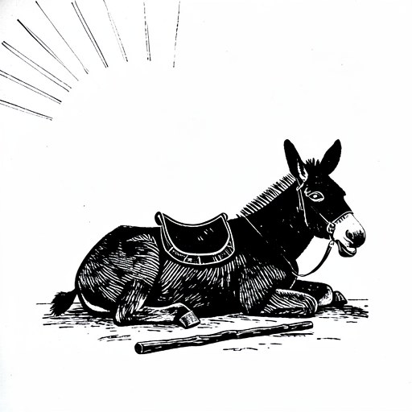
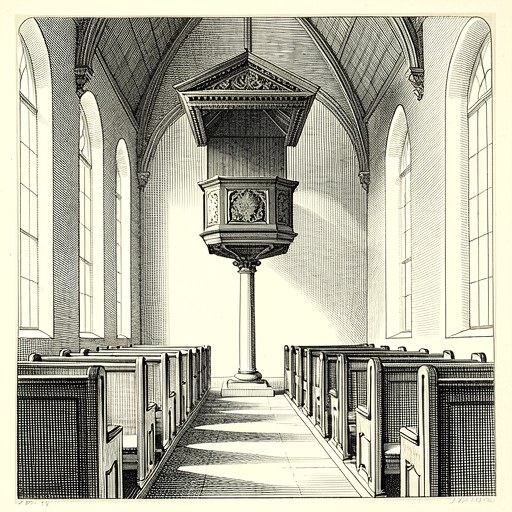
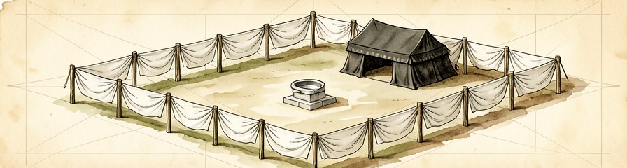

我们一直在问怎样把教会做得更好；
有没有先问过：它本来应该是什么？
第 1 讲 · 诊断 · 为什么要重新问“教会是什么”
我们一直在问怎样把教会做得更好；
有没有先问过：它本来应该是什么？
说得出三大误解、三大病症与神圣三角的对应；分得清描述性与规范性，会用三层判断标准。
从“用圣经为既有做法背书”，转向“让圣经纠正既有做法”。
用三层标准，再加“补充还是废掉”一问，为本教会的一项做法写一页诊断。
家教会是上帝设计中的样式，不是环境压力下的权宜之计。
要拆的是异化的隔断墙，不是墙那边的弟兄。
上帝用过的器皿，未必就是祂给的样式。
邀请在现有处境中反思与革新。
“我们要拆毁的，是某种异化的隔断墙；我们要诊断的，是某种结构性的病灶；我们绝不是要指控墙这一边的弟兄。
上帝曾借巴兰的驴说话，也曾借尼布甲尼撒管教以色列；
驴不是先知职分的样式，巴比伦也不是国度的范本。

驴开了口，却不因此成了先知
AI 生成麻胶版画示意图
合法性不在结果多漂亮，在于是否忠于原始的设计。
三种处境，同一组症状；三种误解，同一个根源。
土壤各不相同，枯枝却长得一模一样
AI 生成水墨示意图
去教会化群体（De-churched）。
许多家庭聚会搬入物业之后，反而失去了原有的生命密度。
受洗的人很多，进入门徒生命的人很少。
书稿称之为结构性疲劳：根源是失去了新约原初的样式（Pattern）。
危机的本质是“顺服”的危机，
不在于方法论。
把“我们是谁”（Who）换成了“在哪里聚会”（Where）。新约里的 Ekklesia（ἐκκλησία），没有一处指建筑物。
徒 7:48 · 徒 17:24
把 A 计划读成 B 计划。初代教会在相对自由的时候，仍然既在圣殿、也在家中擘饼——这是主动的神学选择。
徒 2:46 · 徒 20:20
把退化当成熟。没有宏伟建筑、职业神职、中央策略的初代教会，增长约每十年 40%（社会学家 Rodney Stark 的估算）。
“你确实得到了更大的体积，
但你同时也彻底扼杀了原本属于它的繁殖力。”
表面上一切照旧，里面运行的是另一套程序。
所以书稿要的是本体论的革命（Revolution），修修补补的改良（Reformation）不够。
一座房子、一场聚会、一套管理：
殿宇情结 · 圣职阶级 · 消费主义灵性，以及它们在中国处境中的样子。
无论牧者多忠心，机构的运作逻辑都绕着“维持礼拜”转。
要维护
要运转
要供养
要填满
用“砖头的教会”替代了“活石的教会”。
书稿引述的估计：许多西方主流教会超过 70% 的年度预算用于不动产、行政与内部活动——书稿自注，主要反映美国处境，调查方法论也有争议。
“我们在教义上响亮地宣讲“信徒皆祭司”，但我们的整个空间结构和事奉分配，却在无声地实行着“圣职人员垄断”。
讲台与坐席的空间安排，本身就是一种无声的神学宣告。

讲台高高在上，坐席一律朝前
AI 生成铜版画示意图
“消费主义不是因为信徒变坏才出现的，它是因为聚会的结构本身不再允许‘彼此相顾’才必然出现的。”
人数在增加，门徒的密度在下降。
讲道有时只能来自手机里城市牧师的录音，滋生“二等公民”意识。
“当教会以服务的方式呈现自己，信徒就以消费的方式回应教会。”
属灵父母被制度化为“领导”，平信徒被动化，有机的倍增机制无从启动。
主日人数
成熟门徒
收入去向：物业、薪酬、大型活动
能接待新人、能在职场分享信仰的成熟门徒，并没有跟着人数一起长大。
“一座房子，一场聚会，一套管理——
这是机构化教会的全部资产。
一个家，一种相交，一份父爱——
这是新约教会的全部本体。
各用一句话回答：
我们教会哪一处，最像“外壳贴着新约标签，里面换了操作系统”？
承认蓝图被丢失，是谦卑；自以为可以重新发明蓝图，是僭越。

会幕的图样：照着山上指示的样式
AI 生成建筑手绘示意图
上帝对教会有一个不可被人意替代的原型设计；
一切教会论的建构，都应回到这份神圣蓝图。
“我们的口在传讲十字架，我们的手却在重建祭坛。”
把每个描述都当规范，会生出新的律法主义；把每个描述都当偶然，行传就失去神学分量。
示范：徒 15 章 → 加 2:11-14。
“维持洁净法”不是规范，打破隔阂才是。
家中聚会反复出现；保罗反复问候某人与他家中的教会；轨迹从中心走向去中心。
只肯定亲密的属灵家庭这一本质；在客厅、在餐桌，属于处境应用。
林前 14:26 的“各人或有”是显式教导，语气是命令式。
一人讲、众人听，在新约里找不到规范性依据。
案例三（男女在教会中的角色）留到第 4 讲完整处理。
“家教会的形态不是历史的倒退，而是救赎历史发展的必然归宿。”
最危险的传统，往往名义上只是“多加了一点”。
没有按立牧师，谁来施行圣礼？
没有讲台，谁来宣讲真道？
没有宗派覆盖，谁来保证纯正？
共同的前提：教会的“正常”形态就是堂会形态。
降为“小组”
稀释为“团契活动”
替换为“行政管理”
“不是家教会需要向堂会体制证明自己的合法性，而是堂会体制需要向圣经解释自己为何偏离了那个原初的样式。
用经文为已有的做法背书。
按圣经去审视、纠正，甚至拆毁现有实践。
形式即信息：错误的样式，必然扭曲福音的本质。
诚实估算：过去一年，我们教会的时间、金钱、人力，有多大比例用于“维持聚会运转”，多大比例用于“栽培门徒”？
选一件习以为常的做法（主日形式、圣餐方式、谁在台上讲话），先用三层标准检验，再问：它是在补充圣经的命令，还是在结构上让某一条命令无法落实？
有人说“上帝祝福了我们的堂会，所以它就是对的”，你会怎样用“主权使用≠设计认可”温和地回应？对机构化教会的肯定，你会怎样一并说出来？
我们不是在问怎样把教会做得更好，
而是在问它是从哪里偏离的。